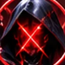
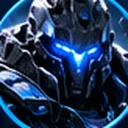
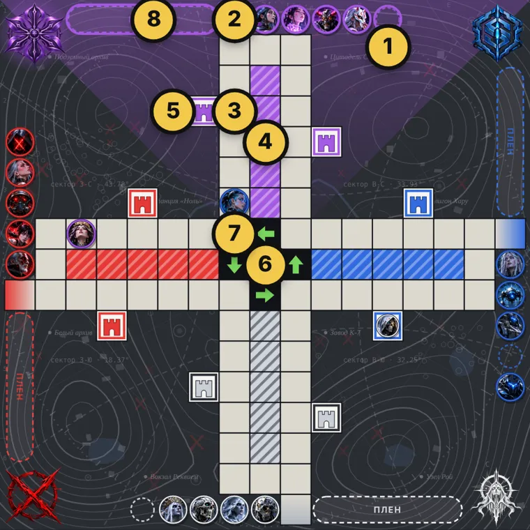
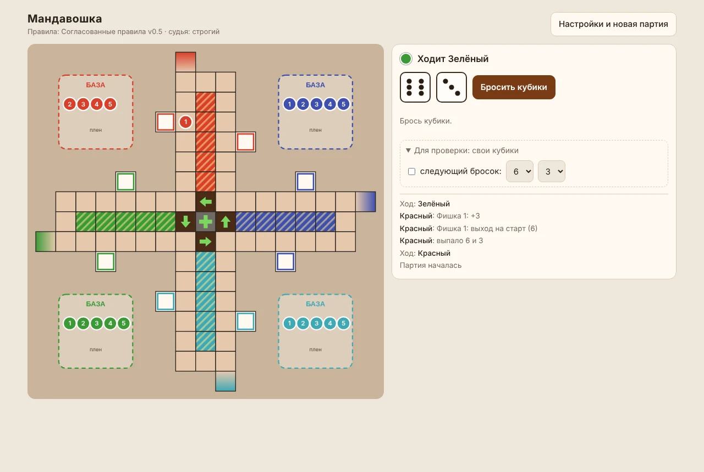
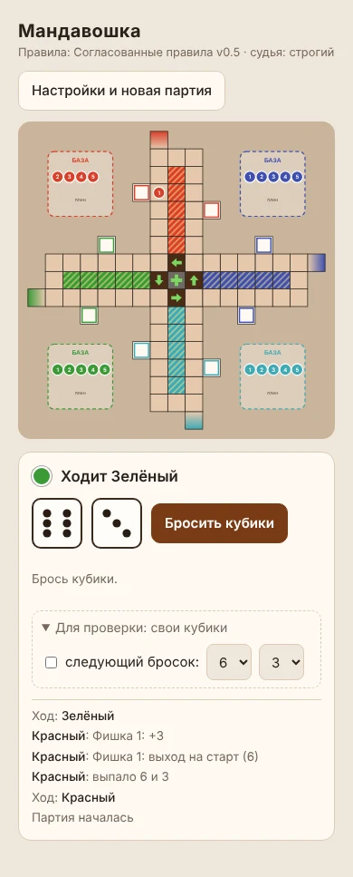

Слева · красные
Зачёркнутые
Секта, которая проникла во все четыре цивилизации и тянет нити между ними.
Правда не обязана быть одной
Настольная война четырёх на крестовом поле. Четыре цивилизации, которые помнят разные версии одной истории.
Четыре стороны креста
Каждая сторона поля — своя цивилизация со своим цветом и девизом. Их объединяет секта «Зачёркнутые», которая проникла во все четыре.

Секта, которая проникла во все четыре цивилизации и тянет нити между ними.
Правда не обязана быть одной
Цивилизация чести и дисциплины. Металлический цветок — её знак.
Честь сильнее приказа

Мир, где реальность поддаётся настройке. Энергоканалы и массивный броне-герб.
Реальность поддаётся настройке
Те, кто помнит всё. Призрачный лик с нимбом и тихая память о прошлом.
Смерть не стирает память
Правила
Классика остаётся классикой. Дополнительные правила включаются в настройках — по выбору игроков.
Фишки стоят на базах. Шестёрка выводит фишку на старт, дальше она идёт по кругу поля к своему дому.
Фишка на чужой клетке отправляется в плен. Шестёрка выкупает своих пленных и возвращает их в игру.
Побеждает тот, кто первым приведёт все свои фишки в дом. Даже если фишек меньше пяти — они всё равно доходят до конца.

Ход партии
Как играть
Играйте с ботами, вчетвером за одним экраном или с друзьями по коду комнаты.
Партия с компьютером на одном устройстве. Можно тренироваться перед онлайном.
Передавайте телефон по кругу. Каждый видит свою сторону поля и свой цвет.
Создайте комнату и отправьте код друзьям. Каждый играет со своего устройства.
Общайтесь во время партии прямо в приложении и в браузере.
Экраны
Так игра выглядит в браузере. Вид «Nexus» — новое оформление, которое ещё на проверке.


Версия 1.2.6
Правила проверяются 113 автотестами. Новые возможности проходят проверку на телефонах и в браузере, прежде чем попасть в сборку.